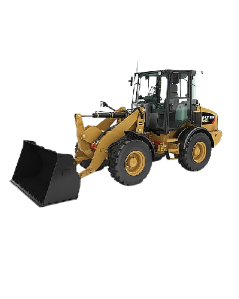

EN
FR
UA
RU
centralized lubrication systems
+380670107273
+14385044412
yan3908@ukr.net
Performance
1 Increasing availability
2 Reduce unplanned downtime
3 Increasing profitability
Economic forces
1 Reduced costs for consumables and special lubricants
2 Reduced energy consumption or fuel consumption due to reduced friction
3 Reduced repair costs
4 Reduce costs through automation
Поддержание в исправном состоянии
1 Увеличение ресурса оборудования
2 Повышение надежности
3 Минимизация поломок
4 Предотвращение недостаточной или избыточной смазки
5 Увеличение интервалов между техническими обслуживаниями
Безопасность
1 Отсутствие ручной смазки в опасных и труднодоступных местах.
2 Уменьшение загрязнений смазочными средствами (снижает опасность подскальзывания)
3 Минимизация риска пожаров (для высокооборотных механизмов)
Защита окружающей среды.
1 Снижение потребления энергии или расхода топлива из-за уменьшения трения
2 Минимизация воздействия на окружающую среду благодаря более эффективному использованию смазочных средств.
Previous
Next
про смазку
CAT 980
CAT 966
CAT 908

CAT 924
CAT 320D
CAT 962
Hitachi ZW-310
Hitachi LX-50
JCB-456нт